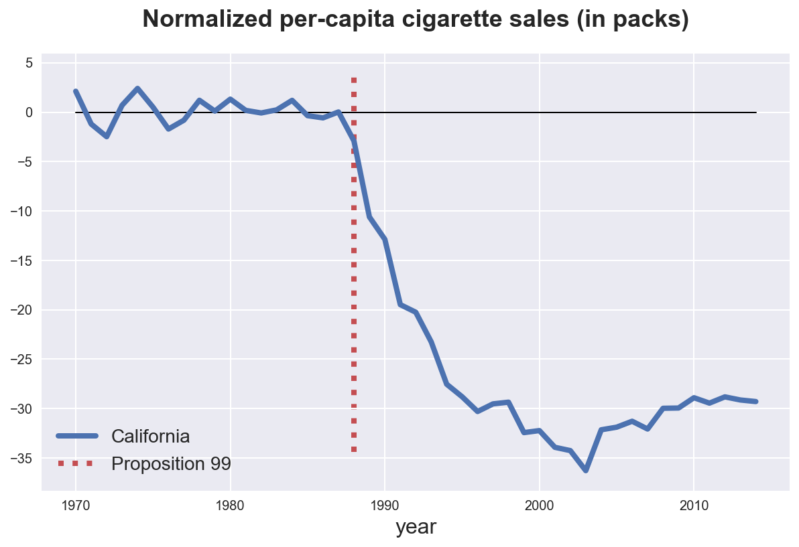
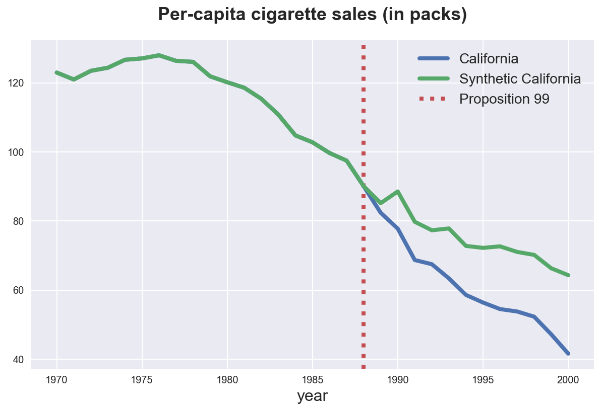
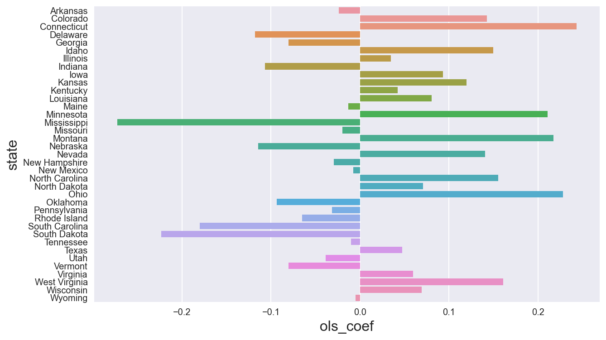

Synthetic Control

In this tutorial, we are going to see how to estimate causal effects when we do not have access to a control group. These settings are extremely common in observational studies and, in these cases, claims of causality are relatively weak. However, there still exist methods to make causal claims, under certain assumptions.
Requisites
For this tutorial, I assume you are familiar with the following concepts:
- Rubin’s potential outcome framework
- Ordinary least squares regression
- Randomization/permutation inference
Academic Application
As an academic application, we are going to replicate Synthetic Control Methods for Comparative Case Studies: Estimating the Effect of California’s Tobacco Control Program (2010) by Abadie, Diamond and Hainmueller. The authors study the effect of a tobacco control program in California onsmoking habits.
Business Case
TBD
Setting
We assume that for a panel of i.i.d. subjects $i = 1, …, n$ over time $t=1, …,$ we observed a tuple $(X_{i,t}, Y_{i,t})$ comprised of
- a feature vector $X_{i,t} \in \mathbb R^p$
- a response $Y_{i,t} \in \mathbb R$
Moreover, one unit is treated at time $\tau$. We distinguish time periods in pre-treatment periods and post-treatment periods.
Crucially, treatment is not randomly assignment, therefore a difference in means between the treated unit and the control group is not an unbiased estimator of the average treatment effect.
Synthetic Control
The problem is that, as usual, we do not observe the counterfactual outcome for treated units, i.e. we do not know what would have happened to them, if they had not been treated. This is known as the fundamental problem of causal inference.
The simplest approach, would be just to compare pre and post periods. This is called the event study approach.
However, we can do better than this. In fact, even though treatment was not randomly assigned, we still have access to some units that were not treated.
For the outcome variable we have the following setup
$$ Y = \left[ \begin{array}{l} Y_{t, post} \ & Y_{c, post} \newline Y_{t, pre} \ & Y_{c, pre} \end{array} \right]
\left[ \begin{array}{l} Y^{(1)}{t, post} \ & Y^{(0)}{c, post} \newline Y^{(0)}{t, pre} \ & Y^{(0)}{c, pre} \end{array} \right] $$
We basically have a missing data problem since we do not observe $Y^{(0)}_{t, post}$.
Following Doudchenko and Inbens (2018), we can formulate an estimate of the counterfactual outcome for the treated unit as a linear combination of the observed outcomes for the control units.
$$ \hat Y^{(0)}{t, post} = \alpha + \sum{i \in c} \beta_i Y^{(0)}_{i, post} $$
where
- the constant $\alpha$ allows for different averages between the two groups
- the weights $\beta_i$ are allowed to vary across control units $i$
- otherwise it would be a diff-in-diff
Academic Application
As an academic application, we are going to replicate Synthetic Control Methods for Comparative Case Studies: Estimating the Effect of California’s Tobacco Control Program (2010) by Abadie, Diamond and Hainmueller. The authors study the effect of a tobacco control program in California on smoking habits.
In particular, in 1989, California passes a tobacco control program that significantly reduces the sales of cigarettes. Was this program effective? Unfortunately, there is neither a counterfactual scenario, nor a randomized experiment.
Let’s start by loading the data.
%matplotlib inline
%config InlineBackend.figure_format = 'retina'
from src.utils import *
df = pd.read_csv('data/adh10.csv')
df.head()
| state | year | cost_per_pack | cig_sales | tax | tax_revenue | california | post | |
|---|---|---|---|---|---|---|---|---|
| 0 | AK | 1970 | 0.418 | 121.3 | 0.16 | 38.3 | False | False |
| 1 | AK | 1971 | 0.421 | 123.0 | 0.16 | 38.0 | False | False |
| 2 | AK | 1972 | 0.420 | 130.0 | 0.16 | 38.1 | False | False |
| 3 | AK | 1973 | 0.438 | 125.8 | 0.16 | 36.5 | False | False |
| 4 | AK | 1974 | 0.449 | 130.4 | 0.16 | 35.6 | False | False |
We have information on cigarette costs, sales, tax rate and revenues for all US states for years from 1970 to 2014.
We are interested in the sales of cigarettes cig_sales over time. Let’s start by reshaping the dataset so that each state is a time series.
df = df.pivot(index='year', columns='state', values='cig_sales').reset_index()
df.head()
| state | year | AK | AL | AR | AZ | CA | CO | CT | DC | DE | ... | SD | TN | TX | UT | VA | VT | WA | WI | WV | WY |
|---|---|---|---|---|---|---|---|---|---|---|---|---|---|---|---|---|---|---|---|---|---|
| 0 | 1970 | 121.3 | 89.8 | 100.3 | 115.2 | 123.0 | 124.8 | 120.0 | 200.4 | 155.0 | ... | 92.7 | 99.8 | 106.4 | 65.5 | 124.3 | 122.6 | 96.7 | 106.4 | 114.5 | 132.2 |
| 1 | 1971 | 123.0 | 95.4 | 104.1 | 109.6 | 121.0 | 125.5 | 117.6 | 213.0 | 161.1 | ... | 96.7 | 106.3 | 108.9 | 67.7 | 128.4 | 124.4 | 97.0 | 105.4 | 111.5 | 131.7 |
| 2 | 1972 | 130.0 | 101.1 | 103.9 | 125.0 | 123.5 | 134.3 | 110.8 | 220.6 | 156.3 | ... | 103.0 | 111.5 | 108.6 | 71.3 | 137.0 | 138.0 | 88.5 | 108.8 | 117.5 | 140.0 |
| 3 | 1973 | 125.8 | 102.9 | 108.0 | 128.3 | 124.4 | 137.9 | 109.3 | 209.4 | 154.7 | ... | 103.5 | 109.7 | 110.4 | 72.7 | 143.1 | 146.8 | 91.0 | 109.5 | 116.6 | 141.2 |
| 4 | 1974 | 130.4 | 108.2 | 109.7 | 133.1 | 126.7 | 132.8 | 112.4 | 182.7 | 151.3 | ... | 108.4 | 114.8 | 114.7 | 75.6 | 149.6 | 151.8 | 98.6 | 111.8 | 119.9 | 145.8 |
5 rows × 52 columns
In an ideal world, one could use the average of all the other states in the United States as a control. Let’s plot what that would look like.
states = [c for c in df.columns if c not in ['year']]
df['not CA'] = df[[s for s in states if s != 'CA']].mean(axis=1)
sns.lineplot(x=df['year'], y=df['CA'].values, label='California')
sns.lineplot(x=df['year'], y=df['not CA'].values, label='Other States')
plt.vlines(x=1988, ymin=plt.ylim()[0], ymax=plt.ylim()[1], linestyle=":", color='C2')
plt.title("Per-capita cigarette sales (in packs)");
It looks like the trends are slightly diverging after 1989, the year of Proposition 99. However, it also looks like the trends are sensibly different before 1989. Therefore, it feels quite a stretch to attribute the differences in cigarette sales post 1989 to Proposition 99 alone.
The idea is to build a synthetic control state for California. Maybe no single state is a good control, but a combination of them could actually provide a good approximation to California. Intuitively, one could think that better approximations are states that are
- larger
- more democratic
In practice, we are going to try to build the synthetic control state such as it approximates pre-trend, the sales of cigarettes pre 1989. Let’s start by using LinearRegression.
from sklearn.linear_model import LinearRegression
def synth_predict(df, state, model):
y = df.loc[df['year'] <= 1988, state]
other_states = [c for c in states if c not in ['year', state]]
X = df.loc[df['year'] <= 1988, other_states]
df[f's_{state}'] = model.fit(X, y).predict(df[other_states])
return model
model = synth_predict(df, 'CA', LinearRegression())
Let’s now plot the predicted against the forea
sns.lineplot(x=df['year'], y=df['CA'].values, label="California")
sns.lineplot(x=df['year'], y=df[f's_CA'].values, label='Synthetic California')
plt.vlines(x=1988, ymin=plt.ylim()[0], ymax=plt.ylim()[1], ls=":", color='C2', label='Proposition 99', zorder=-1)
plt.legend();
plt.title("Per-capita cigarette sales (in packs)");
def plot_normalized(df, state, vline=True, hline=True, **kwargs):
sns.lineplot(x=df['year'], y=df[state] - df[f's_{state}'], **kwargs)
if vline:
plt.vlines(x=1988, ymin=0.9*plt.ylim()[0], ymax=0.9*plt.ylim()[1], ls=":", color='C2', label='Proposition 99', zorder=-3);
plt.legend()
if hline: sns.lineplot(x=df['year'], y=0, lw=1, color='black', zorder=1)
plt.title("Normalized per-capita cigarette sales (in packs)");
plot_normalized(df, 'CA', label="California")

Now we can clearly see the negative effect of the policy and how it rebounds back over time.
We can also observe that we are clearly overfitting: the pre-policy predicted cigarette consumption line is exactly flat. One way to avoid overfitting is to use a penalized estimator.
Another problem concerns the weights. We have not set any constraint on the weights. Let’s see what they look like.
sns.histplot(model.coef_, bins=30).set(title='Coefficients');

We have many negative weights, which do not make much sense from a causal inference perspective. In principle all weights should be between zero and one.
To adress both concerns, we are going to use the Lasso estimator, which uses a norm-1 penalty for parameters in linear regression. Moreover, we will constrain it to have only positive weights.
from sklearn.linear_model import Lasso
synth_predict(df, 'CA', Lasso(positive=True, alpha=5))
plot_normalized(df, 'CA', label='California')

The normalized estimator gives a very similar prediction, however it does not blatantly overfit the pre-period.
Is the estimate significant? The question we are trying to answer is “how unusual is this estimate under the null hypothesis of no policy effect?”. We are going to perform a randomization/permutation test in order to answer this question. The idea is that if the policy has no effect, the effect we observe for California should not be significantly different from the effect we observe for any other state.
Therefore, we are going to replicate the procedure above, but for all other states and observe how unusual is California.
for state in states:
synth_predict(df, state, Lasso(positive=True, alpha=5))
plot_normalized(df, state, vline=False, alpha=0.2, color='grey')
plot_normalized(df, 'CA', vline=True, label='California')

It looks like the effect for California is quite extreme, especially if we consider a one-sided hypothesis test (it feels weird to assume that the policy could ever increase cigarette sales). We get more extreme only for a couple of states, especially in the first 10 years. Therefore, we conclude that the effect of the Proposition 99 policy is statistically different from zero.
References
- Synthetic Control video lecture by Paul Goldsmith-Pinkham (Yale)